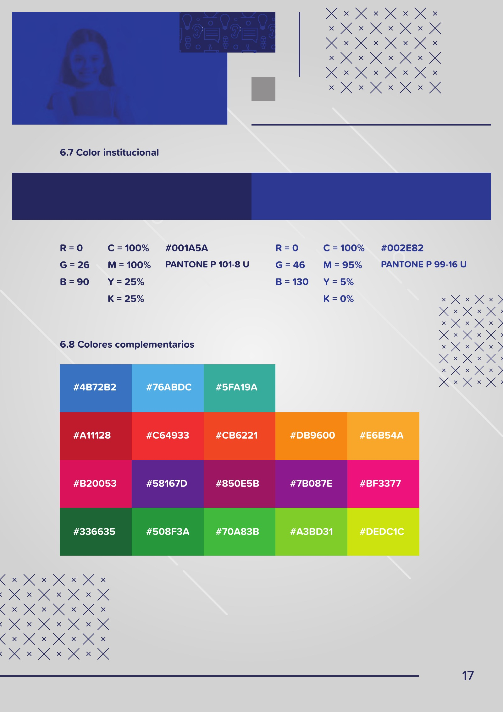
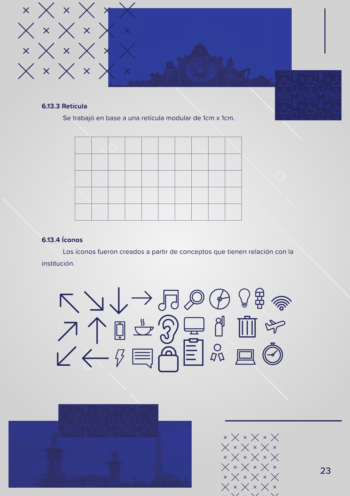
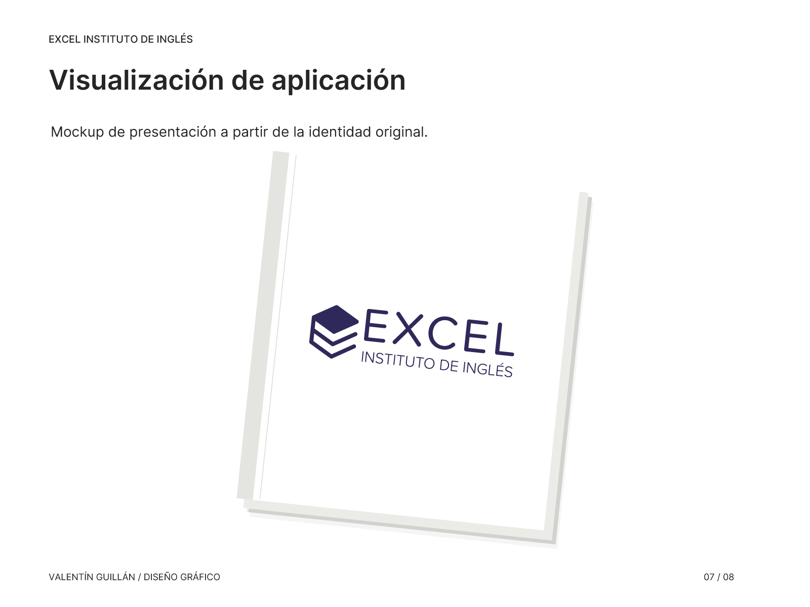

Identidad visual · Papelería
EXCEL Instituto de Inglés
Identidad visual y papelería para un instituto de inglés.
Explorar el proyectoEl proyecto
Un lenguaje para
distintas piezas.
El sistema reúne el identificador, los colores institucionales, una retícula e iconos y aplicaciones en cuadernos, diploma y folleto.
- Cliente
- EXCEL Instituto de Inglés
- Diseño
- Valentín Guillán
- Participación
- Diseño de identidad visual y papelería
Desarrollo visual
Un sistema de color
Tonos institucionales azules y colores complementarios documentados en el manual.

Desarrollo visual
Recursos que conectan las piezas
Retícula, iconos y tramas forman parte del sistema documentado.

Desarrollo visual
Project Book
Una aplicación del sistema visual en los cuadernos de EXCEL.

Desarrollo visual
Diploma
Una plantilla de diploma con los campos sin completar.
Desarrollo visual
El sistema en un folleto
La composición, la imagen y los recursos gráficos se extienden a otra pieza del proyecto.

Visualización de aplicación: EXCEL Instituto de Inglés

Participación y créditos
EXCEL Instituto de Inglés
Diseño de identidad visual y papelería: Valentín Guillán.
Fotografías incluidas en las piezas: archivo original del proyecto.